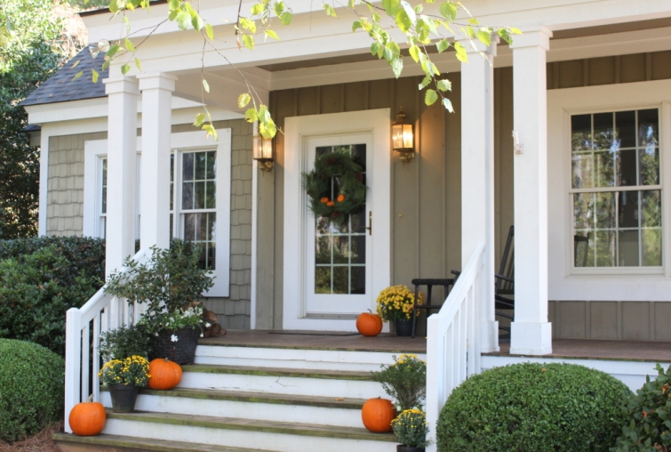
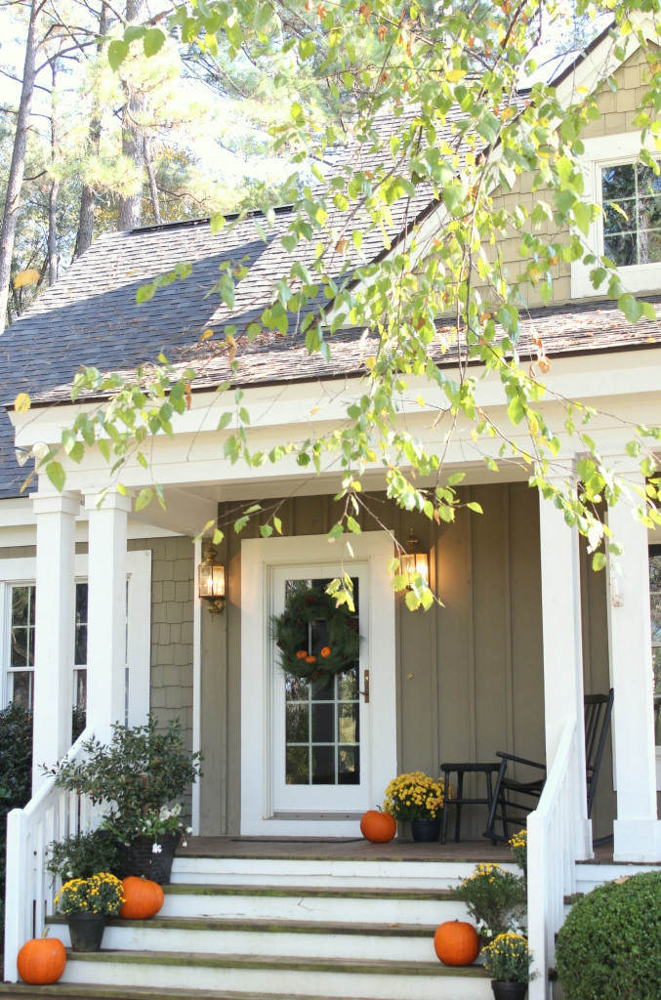
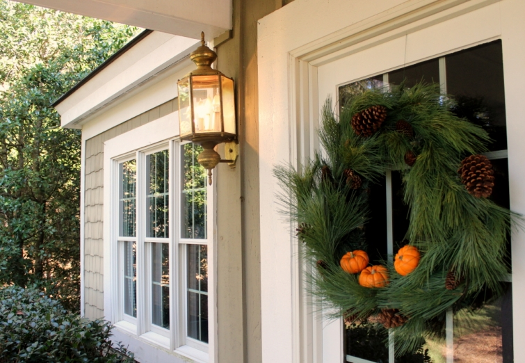

.png)
.PNG)
.PNG)
.PNG)
.PNG)
.PNG)
.JPG)
.JPG)
.PNG)
.PNG)



Happy Halloween week! I thought this week of spooky fun would be a good time to share all my October decorating with you (before it is time to bring out the turkeys. 🙂 ) Fingers crossed, I can show you everything before November arrives. Let’s just start with the outside today.
I sort-of made the wreath on the front door. I say sort-of because I started with an old Christmas wreath that was faux Fraser fir (so it was already a wreath.) I wanted it to be more Southern in feel, so I wrapped and wired on a long leaf pine garland around it, wired on some pinecones and a few real pumpkins using florists’ picks, and ta da – my Halloween wreath was complete. Kind of simple to do, and kind of simple looking….the way I like door wreaths.

It will be easy to wire brown gourds and other darker things on it for November, and then it will be time for simple pine cones and a red bow at Christmas. I plan to put a lantern on the empty table by the door on Halloween night.
 White pansies have been added to the pots and planter on the front porch, and pumpkins and mums are once again taking over the space. 🙂
White pansies have been added to the pots and planter on the front porch, and pumpkins and mums are once again taking over the space. 🙂
The 20 year old planter that was by the side door was finally too worn to use, so we threw it away. I moved the larger planter from in front of the playroom window to take its place by the door here. I actually think I like it better here. 🙂
Another pumpkin and mum by the rocker. (I told you they were taking over the place! 🙂 )
And last but not least, there is a giveaway this week. For a Halloween treat, I am doing a random drawing for a set of author Melanie O’Hara’s fun mystery series The Traveling Tea Ladies. (5 books!) It’s “Charlie’s Angels meets Steel Magnolia’s.” I thought this would be perfect for Halloween (not too scary.) And I am including a pretty tea pot, a box of my favorite tea (Bigelo’s Constant Comment), and a cute little tin in which you can store your tea. (Melanie provided the books, but I purchased everything else.)
Just leave a comment on any or all of the posts that publish here this week (between 10/27/14-10/30/14.) You must be 18 years of age or older to enter, and the drawing will close at midnight Eastern Time Thursday, October 3o, 2014. The winner will be announced on Friday, October 31, 2014 (Halloween 🙂 )
I will be back soon with more fall decorating and another chance for you to enter the Halloween giveaway.
Until next time…


.PNG)
Dear Kelly,
Thanks for featuring my books, The Traveling Tea Ladies Tea Murder Mysteries in your book giveaway.
Some of your readers were trying to locate them in their local libraries. If your library doesn’t carry them, you can request they place an order through their ordering channels, but they are available at Amazon & Barnes & Noble in paperback, hardback and e-book format.
It’s good to see so many people love tea, mysteries and Fall as much as I do. Your house is gorgeous, as usual, and perfectly decorated for the season.
Thank you Kelly again for featuring the books! I hope to do another book giveaway with your readers in the near future.
Until Our Next Pot of Tea,
Melanie O’Hara
Author of “The Traveling Tea Ladies”
———————————————————————–
Melanie, thank you so very much for allowing me to share your books with the readers here! I know our winner will love them all!
Kelly
We don’t do scary here, either. I’m more of a fall girl, rather than a Halloween girl. I do like the candy if the glass canisters.
I love your simple outdoor decor
Love your photos…my first time to read through your posts! I’ll be back! I’m west coast, so may not have made it by midnight!
Classy style, Kelly! The last two rooms this week did not disappoint. I knew they wouldn’t! I love the colors! These rooms are definitely magazine worthy! The black sets off every detail. Thank you for delighting us with these great decorating Treats! Happy Hallloween!
How fun!!! Hope I win:) LOVE your blog!!
Love the post and contest. I have many pumpkins on my porch as well, but I’ll be taking them in tonight so they are safe during mischief night!
I love love love the wreath idea!!! I really like that your able to use it for a few seasons…..great idea and once again I shall be copying you!
Love the inspiration found on your blog
Love your decorated front porch Kelly! The wreath is a nice added touch too! Thank you for a chance to win your giveaway; the books look like they will be a fun read! Happy Halloween!!!
Love the porch and all your pumpkins! Happy (non-scary) Halloween!
Love Love seeing all you decor ideas for the change of seasons. I love the smores treat bag idea for halloween. Ready to run out and find some ghost peeps to make these.
We returned from a week in London last night, and I discovered your post about The Tea Ladies this morning! We had lots of tea and even saw a mystery, The MouseTrap. I think this is a brief, very special time of travelling, tea, and Talk of the House. Wonderful! Thanks for doing the giveaway!
Your home is stunning–so warm and cozy and very stylish. I look forward to reading your blog and seeing beautiful pictures of your home and of your travels. We share many of the same interests in travel and home decor. However, sorry to report, 5th of May (is that the right name?) the small corner restaurant in St. Simons is no longer open! I was so looking forward to those waffles you mentioned–darn!
I love fall decorations! You have some awesome fall touches!!!
Simple is best. Wishing I had bought a few more mums after seeing yours. Your porch looks wonderful. I like the more natural look wreath you did. The stores here are cleaned out now and just about ready to promote Christmas! Ugh! I will enjoy your fall posts awhile longer. Oh, to live in the South! Love your home.
Love your simple and cozy style decorating.
So beautiful and inviting! Thanks for sharing!
Love your home—bright and airy—and I love the thinking you put into each element—
Love Love Love the use of apothecary jars—and the delightful smores kits—I will be borrowing this idea.
Happy Halloween!!!
Hi
Wowza! May I hang out at your house? It is so pretty and comfortable. I enjoy your blog too- thank you for the give away!
Make everyday special….
I just absolutely love your decorating style. I have copied it on a very small scale, but hope to work up to more. Your taste appeals to me very much. Love your website.
What a gorgeous house and FUN giveaway! I’d la la LOVE to win 🙂
Your Halloween decor is just perfect. This book series sounds great and the teapot is adorable. I love tea this time of year……
Thank tin is adorable
If I win you can come sit on my porch and read and sip tea with me. 🙂
Btw, loved the peeps smores but I daresay we usually have around 250 kids show up. I live in a small town with lots of farms so they all come in. Lots of cute costumes to see including some of the parents. Loads of fun! 🙂
Love your home and your posts ! You have a refreshing take on home decor and the Fall touches are lovely . I love enjoying a cup of tea while reading on chilly afternoons .
So calm and restful. I want to take a book off the shelf and plop down and read!
I would love to come over and sit on your porch!
Relaxing and inviting!
Cindy
Your photos of your home combine a feeling of warmth and home with an inviting style that’s a balance of current style and a sense that real people live there.
That kind of perfect balance is difficult to achieve, but you make it seem possible for all of us. Thank you.
Kelly, I love your wicker planter full of fall decor! And, tea is one of my favorite afternoon fall treats for myself…especially when I add a lemon drop! The book series sounds like a fun read. Looking forward to seeing what you do for fall on the inside!
Just beautiful! The wreath is perfect and just my style! Wish I was setting on your porch reading and enjoying some tea! Thank you for the chance to win.
Lovely, just enough, perfect…..
I love my pumpkins…no jackolanterns….that way they can stay out until Thanksgiving! Pick me!
I have read all the Traveling Tea Ladies books, so reminds me of my group of special friends! enjoyed looking at your fall décor! very pretty !
Kelly,
I love all of the pumpkins and mums you have displayed around the outside of your home. They are all so festive. It also reminds me of my own home right now. I love the orange of the pumpkins scattered around with contrast of the pretty yellow and rust colored mums. I can not wait to see the playroom and how it is decorated for Halloween. Is there a movie list on the chalk board again? What is in the jars? I guess I will have to wait and see.
Thanks for blogging! I know you are a teacher and still make time to decorate your home, travel, be a mom, and share recipes- one of my favorite parts!
Love your blog and what how you decorate with simple organic elements. Would love a good read – thank you for the opportunity.
What a great gift!
Hi Kelly your home looks beautiful, simple perfect fall decor. Thank you for the chance to win!
I love your porch…living in SW Florida I miss all the beautiful colors of fall! And NO kids trick or treating at my house!
Pick me to win, I love mysteries and the tea set looks lovely. A great way to spend a Halloween night, a good book and tea!!!
Oh, Kelly, how generous of you to treat one of your “fans” to this beautiful giveaway! As always, when I see that there is an email from you, it’s the first one I open. It makes my day – always so inspirational. Thank you so much.
Ooh, Constant Comment….my favorite tea! Your porch looks lovely, Kelly. I was inspired last year by your Fall decorating with mums and tried it this year….and I’ve already managed to kill them all….inside and out.
Seriously though, I appreciate all the inspiration you give us. I feel like I always gain something or learn something new from your posts.
I love the black wicker and black rocking chairs in contrast to the oranges and yellows. Beautiful!!!
Your home is beautiful, warm and inviting, perfectly appointed, I love following your blog!
Love your Autumn decorations, would not expect anything but classy from you.
Love the decorating. I used you as inspiration to decorate the front of our house this year….pumpkins and mums. My neighbor commented on how nice everything looked. I gave you full credit and told her to check out your site. Happy Halloween!
Your home is as charming as ever! Love the tasteful decorations and the welcoming feel they provide!
Everything looks great, as usual. What color is your wicker planter painted. I have one like it but it is white and I love the look of yours.
Your porch looks so festive and lovely. I like how you made the wreath more southern. All the pumpkins and mums! I’m beginning to change up the decorations I have up. Going a bit more woodsy/rustic. Less pumpkins and mums for Thanksgiving. Your wreath idea is perfect for that theme. Have a great week!
Love your house and decorations! Halloween is my favorite holiday and I tend to go overboard with decorating. Thanks for the giveaway, I hope I win!!
Your home always inspires me. It is beautiful with the pumpkins, yellow mums, and rocking chairs.
I loved this week’s Halloween post, particularly the use of the garland wreath with the pumpkins and pine cones. This look could carry on through Thanksgiving.
Your house is lovely! You can never have too many pumpkins……
Love the simplicity of the wreath and change up for both seasons. And the planter is very cheery by the entrance.
I’m a first time visitor to your blog via Pinterest and Oh my goodness, I LOVE houses too! Thanks for the beautiful photos. I love to read new mysteries as well, so here’s hoping I win!
Hey Kelly! You’ve inspired me once again. Many thanks for sharing your creativity and your beautiful home! I’m curious about Melanie’s books-they look inviting, just like your home. And Constant Comment has been my favorite tea for years! If I could have your address, I’d like to send you a special tea I gave to Jan Karon when I met her in Lexington. Have a fun Hallowe’en! Julia
I love your fall porch! It’s wonder fall!
Those books look adorable! I love fast, yet entertaining reads like those. I think I shall see if they are available at my local library (as I rarely win –well, actually never–) a contest.
Kelly,
Beautiful fall. decorating! I love the Savannah house in Garden & Gun you noted in your last post. The owners mentioned they would be hosting a wedding there in November. I bet that will be pretty.
Love your decorating style! I have not read anything by Melanie O’Hara so it would be fun to try a new author.
Love your front door wreath. It will make a perfect transition into the Christmas season. Pumpkins and mums are a great fall combination.
Kelly,
You have such a pretty porch. I like the natural elements you’ve used for the season. Constant Comment is our favorite tea.
What a fun giveaway.
xo,
Karen
your decor is nice……..and simple. I like that. I am most interested in discovering new to me authors. If I don’t win the giveaway I will be buying something from Melanie O’Hara. Thanks for sharing.
You can never have to many pumpkins!!! I have never heard of these books, very curious so I am of to Google them! Thanks again for the inspiratio!
Hi Kelly, All of your fall and “Halloween” touches are perfect! Plan to “copy” your wreath! How clever that it can transform over the next couple of months with just a few simple changes! LOVE IT!! Constant Comment is my favorite tea as well!
Hi Kelly,
You always decorate your home so beautifully. Thank you for the chance to win such a nice giveaway. Have a great week!
Sue
Beautiful as usual!!
I feel so lucky I stumbled upon your blog several years ago! You have a unique talent- writing, photography, interior design, tablescaping, AND a busy mother and teacher! As a Kindergarten teacher of 28 years and mother of 4, grandmother to 2, many days your wonderful posts warm my weary bones and inspire me. I wonder often how you juggle the energy demanded of you. But it is obvious your joy is in every photo and post. Thank you Kelly for sharing your love of HOME! tina k.
Love your pumpkin and mums decorations.
Hi Kelly,
I love the wreath – you did a great job! I wish that I had room no my porch for a couple of rockers!
Megan
I love your house! I like the simplicity of the mums and pumpkins-very tastefully done!
Your porches are lovely…I especially like that wicker planter! 😉
I enjoy your site and love to see photos of your home. The wreath is oh so pretty and fall-ish.
I love your rockers and the idea of a lantern on the table.
Your wreath is so pretty — as are all your fall decorations! You make putting it together sound so simple — maybe even something I can master. 🙂 The series sounds darling — definitely up my alley! Putting it on my to-read list!
Love the way you wrapped the wreath. I will be doing this. Thanks. (The books look cute)
Hi Kelly, Your home looks wonderful! I love how you are using the Fall materials and taking them into the Christmas Season. The books sound great There’s nothing like reading a good book and having a cup of tea on a cool evening in front of the fireplace.
Take care.
Emily
As always simply beautiful!
I love your simple but great decorating style. I especially like the idea of changing one wreath for the holidays from Halloween to Christmas. Storage of all the wreaths can take over! Great idea. Thank you for the chance at the giveaway- a perfect fall weekend treat.
Always a classic look– love it!!
This makes me want to say….”Happy Fall, Y’all!” I just love your decorating style. It is funny that you “sort-of” made a wreath because I “sort-of” made one too. I had some fall garland that was wrapped in a circle. I was haphazardly trying to decorate so instead of unwinding the garland I just hung it on a hook that already had our initial hanging there. Happy Accident! I sort-of made a wreath! Yours is much more versatile though and will be great for the changing of the seasons. I love all of your pumpkins and mums. (Josie, look how great that wicker planter looks with flowers in it….and we thought it was just a drink cooler.)
Beautiful Fall porch Kelly..and love that wreath!!
You never stop amazing me with your wonderful decorating ideas.
I really think your Fall-Halloween decorations are lovely, you
really inspire me. I am looking forward to your Thanksgiving
decorations.
Kelly,
Love your outdoor fall decorating, especially the wreath you made that can be used for the rest of the holidays this year with just a few changes. Take care, Lindy
Hi Kelly,
Love your fall decorations, the wreath turned out great. I finished reading the new Jan Karon book over the weekend. I loved it! Thanks for the giveaway.
Dawn R.
You won’t believe it– but I just sat down with my pumpkin coffee ( just like last Saturday when you posted) and lo and behold– another posting! What good timing! My daughter ( recovering nicely from broken ankle) said ” what a nice treat for you!” Yea! Love your mums, pumpkins and white pansies! I bet your students are excited about Halloween this week?! I plan on having your cast iron deep pizza on Friday for supper. One year our youngest got us a fresh pizza that you bake at home that looked like a jack o-lantern. There is a shop in Orlando that makes holiday pizzas to finish at home. Good idea!!? Have a Boo-tiful Great Pumpkin Week!
Nice fall decorating and not overdone. I have to admit to not buying the first pumpkin. But I live in the woods surrounded by a glorious autumn spectacle, and no one but us would see it anyway (we don’t get many visitors and no trick-or-treaters up here on the mountain). I think I’m justifying being lazy. My husband has even done more than me – he at least bought some pansies and potted them up to go by the steps. Would love to win your giveaway! I’m a tea drinker, Constant Comment is one of my favorites, and I love a charming cozy mystery. Thanks for the opportunity!
Kelly ~~~you never cease to amaze me! Your Autumn decor is awesome….and your home looks wonderful as always! So love all the black painted furniture on your porches.
Your Fall decorations are so welcoming!! Thanks for the chance to win the “halloween” giveaway!!
Love the wreath. The pumpkins really shine in the decorating.
Hi Kelly, your house looks beautiful! Thank you for a chance to win your giveaway, I would to win!
Love your Autumn decorations…your efforts are always so inviting, warm and thoughtful – but not overdone! Have a blessed day!
Love your Autumn decor…Pumpkins gourds and mums just make me happy with all the colors you only see in the fall. Thank you for very lovely give away…